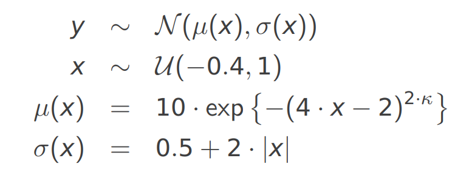
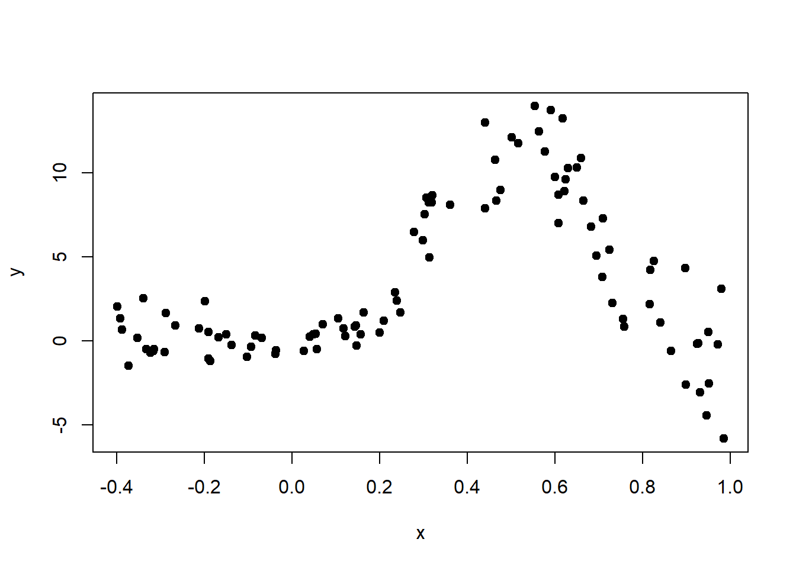
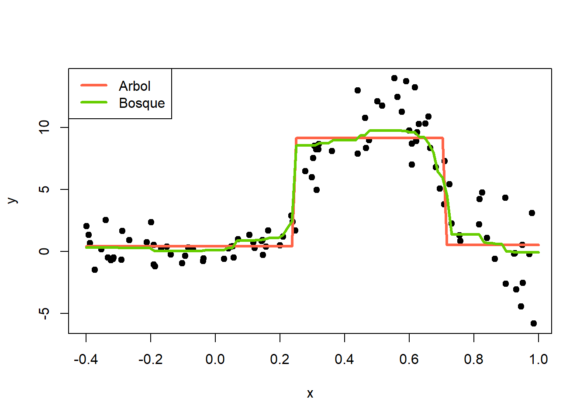

8 Random Forest
Random Forest o Bosques Aleatorios fue propuesto por (Ho 1995) y consiste en crear muchos árboles para luego usarlos en la predicción de la variable de interés. A continuación se muestra una ilustración de la técnica.
Explicación sencilla de Random Forests
Se inicia con un conjunto de entrenamiento que tiene \(n\) observaciones, la variable interés \(Y\) y las variables predictoras \(X_1, X_2, \ldots, X_p\). Luego se aplican los siguientes pasos.
- Se construye un nuevo conjunto de entrenamiento del mismo tamaño del original usando la técnica Bootstrap. Esto se hace generando un muestreo con reemplazo y de esta forma es posible que algunas observaciones aparezcan varias veces y mientras que otras observaciones no aparezcan.
- Se construye un árbol (de regresión o clasificación) usando en cada partición un subconjunto con \(k\) variables predictoras de las \(X_1, X_2, \ldots, X_p\) disponibles.
- Se repiten los pasos anteriores \(B\) veces, por lo general \(B=500\) o \(B=1000\). De esta forma tendrám muchos árboles que luego se pueden usar para hacer predicciones de \(Y\).
Si queremos predecir la variable \(Y\) para un caso en el cual se tienen la información \((x_1, x_2, \ldots, x_p)^\top\), se toman cada uno de los \(B\) árboles creados y se predice la variable \(Y\), de esta manera se trendrán las predicciones \(\hat{Y}_1, \hat{Y}_2, \ldots, \hat{Y}_B\). Luego usando estas \(B\) predicciones, se puede obtener una predicción unificada dependiendo de si el problema es de clasificación o de regresión. A continuación una figura ilustrativa de cómo se unifican las \(B\) predicciones.
Ejemplo
Abajo se presenta un video con una explicación detallada de cómo aplicar random forest para un caso sencillo de clasificación con \(n=4\) observaciones y \(p=4\) variables predictoras.
Ejemplo

La base de datos que vamos a usar en este ejemplo está disponible en el UCI Repository. El objetivo es crear un árbol de clasificación para predecir la variable \(Y\) (target) definida como:
\[ Y=\left\{\begin{matrix} 1 \quad \text{si paciente SI sufre una enfermedad cardíaca} \\ 0 \quad \text{si paciente NO sufre una enfermedad cardíaca} \end{matrix}\right. \]
en función de las variables age y chol.
Las variables en la base de datos son las siguientes:
- Age: displays the age of the individual.
- Sex: displays the gender of the individual using the following format: 1 = male, 0 = female.
- Chest-pain type: displays the type of chest-pain experienced by the individual using the following format: 1 = typical angina, 2 = atypical angina, 3 = non — anginal pain, 4 = asymptotic.
- Resting Blood Pressure: displays the resting blood pressure value of an individual in mmHg (unit)
- Chol: displays the serum cholesterol in mg/dl (unit)
- Fasting Blood Sugar: compares the fasting blood sugar value of an individual with 120mg/dl. If fasting blood sugar > 120mg/dl then : 1 (true) else : 0 (false).
- Resting ECG : displays resting electrocardiographic results: 0 = normal 1 = having ST-T wave abnormality, 2 = left ventricular hyperthrophy.
- Max heart rate achieved: displays the max heart rate achieved by an individual.
- Exercise induced angina: 1 = yes, 0 = no.
- ST depression induced by exercise relative to rest: displays the value which is an integer or float.
- Peak exercise ST segment: 1 = upsloping, 2 = flat, 3 = downsloping.
- Number of major vessels (0–3) colored by flourosopy : displays the value as integer or float.
- Thal: displays the thalassemia: 3 = normal, 6 = fixed defect, 7 = reversible defect.
- Target: Diagnosis of heart disease. Displays whether the individual is suffering from heart disease or not: 0 = absence, 1, 2, 3, 4 = present.
La base de datos está en un repositorio en la web y se puede leer usando el siguiente código.
library(readr)
url <- 'https://raw.githubusercontent.com/fhernanb/datos/master/cleveland.csv'
datos <- read_csv(url, col_names = FALSE)Como la base de datos viene sin los nombres se deben colocar manualmente así:
colnames(datos) <- c('age', 'sex', 'cp', 'trestbps', 'chol',
'fbs', 'restecg', 'thalach', 'exang',
'oldpeak', 'slope', 'ca', 'thal', 'target')La variable respuesta es target que tiene cuatro números así: 0 = absence, 1, 2, 3, 4 = present. Por esa razón vamos a crear la nueva variable y que agregaremos a la base de datos usando el siguiente código.
Nota: en orden lexicográfico la etiqueta absence está primero que presence porque inicia con la letra a. Eso significa que el árbol va a tomar la etiqueta absence como 0 mientras que presence la va a tomar como 1.
Nota: se pudo haber creado la variable y usando ifelse(datos$target == 0, 0, 1) pero decidimos usar los nombres absence y presence en lugar del 0 y 1 para facilitar su interpretación.
Para crear el modelo random forest se debe cargar la librería randomForest así:
Vamos a crear un random forest con \(B=400\) árboles y \(k=1\) variables en cada partición, para esto podemos usar la siguiente instrucción:
set.seed(12345)
model <- randomForest(y ~ age + chol, data=datos,
ntree=400, mtry=1,
proximity=TRUE)En el código anterior se fijó la semilla en el valor 12345 para que usted pueda replicar el ejemplo y obtener los mismos resultados.
Para explorar el modelo ajustado podemos hacer lo siguiente:
##
## Call:
## randomForest(formula = y ~ age + chol, data = datos, ntree = 400, mtry = 1, proximity = TRUE)
## Type of random forest: classification
## Number of trees: 400
## No. of variables tried at each split: 1
##
## OOB estimate of error rate: 45.54%
## Confusion matrix:
## absence presence class.error
## absence 97 67 0.4085366
## presence 71 68 0.5107914De la salida anterior podemos destacar los siguientes resultados:
- El número de árboles utilizados fue de 400, valor que coincide con el indicado en la creación del modelo.
- El número de variables usadas en cada partición de los árboles fue 1.
- El error OOB (Out-Of-Bag) fue de 45.54%, error obtenido al clasificar las observaciones OOB que no fueron incluidas en el conjunto de datos de entrenamiento Boostrap.
- La tasa de clasificación correcta de las observaciones OOB fue de 54.46%, y se obtiene del complemento del error OOB.
- 97 pacientes que NO sufren una enfermedad cardíaca, fueron clasificados correctamente en el grupo absence.
- 68 pacientes que SI sufren una enfermedad cardíaca, fueron clasificados correctamente en el grupo presence.
- La tasa de clasificación correcta en este caso es \[ tcc = \frac{97+68}{97+67+71+68}=\frac{165}{303}=0.5445545 \approx 54\% \]
Supongamos que nos llegaron 3 pacientes, el primero un hombre de 45 años con nivel de colesterol 300, el segundo una mujer de 60 años con nivel de colesterol de 450 y el tercero otro hombre de 65 años con nivel de colesterol de 200. ¿A qué grupo se debe asignar cada paciente?
nuevo_df <- data.frame(age=c(45, 60, 65),
chol=c(300, 450, 200))
predict(model, newdata=nuevo_df, type='response')## 1 2 3
## absence absence absence
## Levels: absence presenceDe la salida anterior tenemos que los tres pacientes son clasificados en el grupo absence.
Ejemplo
En el siguiente video se muestra como se puede crear un modelo random forest usando la totalidad de las variables de la base de datos del ejemplo anterior.
Mire el video y replique el ejemplo en su computador.
Random Forests distribucionales
distree (Schlosser et al. 2021) es un paquete de R para ajustar árboles y bosques de regresión distribucionales basado en la estimación de máxima verosimilitud de parámetros para familias de distribución específicas. Para instalar el paquete puedes usar el siguiente código.
Para crear un random forest (bosque aleatorio) distribucional se usa la función distforest que tiene la siguiente estructura.
distforest(formula, data, subset, na.action = na.pass, weights,
offset, cluster, family = NO(), strata,
minsplit = 20, minbucket = 7, splittry = 2
control = disttree_control(teststat = "quad", testtype = "Univ", ...)El argumento family se utiliza para indicar la distribución estadística que se asume para la variable respuesta \(Y\). Se puede elegir cualquier distribución de gamlss (Stasinopoulos and Rigby 2024) o cualquier distribución de los paquetes RelDists (Hernandez et al. 2024) RealDists (Hernandez-Barajas and Marmolejo-Ramos 2024) y DiscreteDists (Hernandez-Barajas et al. 2024).
Ejemplo
Este ejemplo está basado en un ejemplo de esta presentación de Achim Zeileis. El modelo estadístico para simular los datos es el siguiente:

El siguiente código sirve para simular los datos.
n <- 100
k <- 2
set.seed(12345)
{
x <- runif(n=n, min=-0.4, max=1)
media <- 10 * exp(-(4*x-2)^(2*k))
desvi <- 0.5 + 2 * abs(x)
y <- rnorm(n=n, mean=media, sd=desvi)
}
datos <- data.frame(y, x)
head(datos)## y x
## 1 8.7130091 0.6092655
## 2 4.7451104 0.8260825
## 3 8.3554765 0.6653753
## 4 1.0863330 0.8405744
## 5 2.3961818 0.2390733
## 6 0.2318576 -0.1670795Ahora vamos a explorar los datos simulados.

El objetivo de este ejemplo es entrenar un árbol y un bosque distribucional para compararlos.
library(disttree)
mod1 <- disttree(y ~ x, data=datos, family=NO)
mod2 <- distforest(y ~ x, data=datos, family=NO)Ahora vamos a crear un secuencia de datos para estimar \(Y\) usando los dos modelos.
Calculamos las estimaciones usando predict.
y_hat_1 <- predict(mod1, newdata=newdata)$mu # El resultado es mu y sigma
y_hat_2 <- predict(mod2, newdata=newdata)$mu # elegimos solo muMostramos los resultados gráficamente.
plot(x=x, y=y, pch=19)
lines(x=newdata$x, y=y_hat_1, col="tomato", lwd=3)
lines(x=newdata$x, y=y_hat_2, col="chartreuse3", lwd=3)
legend("topleft", legend=c("Arbol", "Bosque"),
lwd=3, col=c("tomato", "chartreuse3"))
De la figura anterior podemos ver que la curva de estimación con bosques aleatorios es más flexible mientras que la del árbol no es nada flexible.